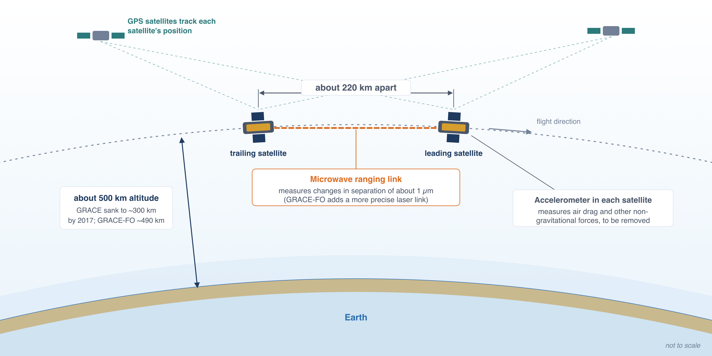
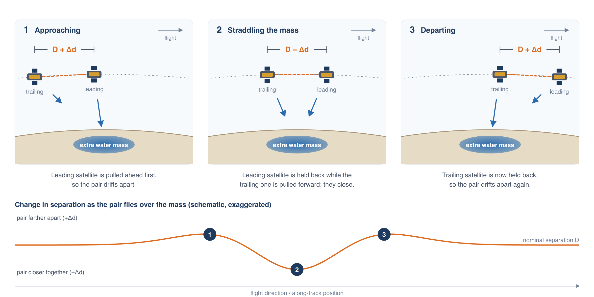
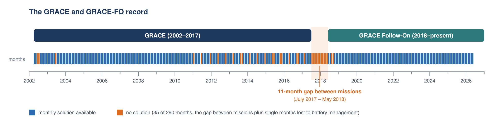

La Misión GRACE
Dos satélites que pesan el agua
GRACE (Gravity Recovery and Climate Experiment) es un par de satélites idénticos que vuelan uno detrás del otro en la misma órbita polar, separados unos 220 km y a unos 500 km sobre el suelo. La NASA y el Centro Aeroespacial Alemán lanzaron el primer par en marzo de 2002. GRACE Follow-On (GRACE-FO), lanzado en mayo de 2018, continúa la medición con el mismo diseño.

Los satélites no toman imágenes de la superficie. Miden continuamente la distancia entre ellos con un sistema de medición de distancia por microondas con una precisión de alrededor de un micrómetro, una fracción del grosor de un cabello humano. (GRACE-FO lleva además un instrumento experimental de medición de distancia por láser que es aún más preciso.) Receptores GPS siguen la posición de cada satélite, y acelerómetros a bordo miden las fuerzas no gravitacionales, principalmente el arrastre atmosférico, para poder eliminarlas. Lo que queda de las variaciones en esa distancia revela las variaciones de la gravedad de la Tierra a lo largo de la trayectoria de vuelo.

Cuando el par se acerca a una región con masa adicional, como un acuífero que se ha llenado después de una temporada húmeda, el satélite delantero siente primero la atracción adicional y acelera ligeramente, así que la separación entre los dos aumenta. Una vez que el satélite delantero ha pasado sobre la masa, es frenado hacia atrás mientras el satélite trasero es atraído hacia adelante, y la separación se reduce. Al pasar el satélite trasero, la separación vuelve a aumentar antes de regresar a la normalidad.
La órbita cubre todo el planeta aproximadamente una vez al mes. El Jet Propulsion Laboratory (JPL) de la NASA, el Center for Space Research de la Universidad de Texas (CSR) y el Centro Alemán de Investigación en Geociencias (GFZ) convierten cada uno un mes de datos de distancia en un mapa del campo gravitatorio de la Tierra. Al restar un campo promedio de largo plazo queda la anomalía de gravedad del mes.
De la gravedad al agua
En periodos de un mes a unos pocos años, casi todo el cambio del campo gravitatorio de la Tierra sobre los continentes proviene del movimiento del agua: la nieve que se acumula y se derrite, los suelos que se humedecen y se secan, los ríos y lagos que suben y bajan, y los acuíferos que se llenan o se bombean. Por eso la anomalía de gravedad puede convertirse en un cambio en la masa de agua almacenada en una columna que va desde la parte superior de la vegetación hasta los acuíferos. Ese total se llama almacenamiento total de agua (TWS), y su desviación respecto a la media de largo plazo es la anomalía de almacenamiento total de agua (TWSa).
La TWSa se expresa como una lámina de equivalente de agua líquida (LWE) en centímetros: el espesor de la capa de agua que explicaría el cambio de masa si se repartiera uniformemente sobre el área. Una TWSa de −10 cm sobre una región significa que la región contiene 10 cm menos de agua que su media de largo plazo, lo mismo que quitar una capa de agua de 10 cm de toda su superficie. Como ya es una lámina de agua, un valor de LWE se convierte en volumen multiplicándolo por el área: −10 cm sobre 50,000 km² son −5 km³.
Anomalías, no cantidades
GRACE mide cambios en el almacenamiento, no la cantidad almacenada. Una GWSa de cero significa que el almacenamiento es igual a su promedio de 2004–2009, no que el acuífero esté vacío. La anomalía puede decirte cuánto almacenamiento se perdió o se ganó entre dos fechas, pero no cuánta agua queda.
La solución mascon que usa la aplicación
La aplicación usa la solución mascon de JPL (RL06.3, con el filtro Coastline Resolution Improvement). En lugar de describir el campo gravitatorio con una serie matemática suave, JPL divide la superficie de la Tierra en 4,551 casquetes de igual área, cada uno de unos 3° (aproximadamente 330 km) de ancho, y resuelve directamente el cambio de masa en cada casquete. El filtro de línea de costa divide los casquetes que cruzan una costa para que los cambios de masa del océano no contaminen los valores en tierra.
JPL distribuye los valores mascon en una malla de 0.5° por conveniencia. Todas las celdas de 0.5° dentro de un mascon repiten el valor de ese mascon, así que la resolución real de la TWSa es el mascon de 3°, no la celda de 0.5°. Puedes verlo en la aplicación: cambia la capa mostrada a TWSa, acércate y activa Show mascon boundaries. Las celdas de TWSa solo cambian de valor donde cruzan el límite de un mascon.
La TWSa de JPL es relativa a la media de enero de 2004 a diciembre de 2009. La aplicación usa la misma línea base para todas las capas.
El registro y sus vacíos

El registro comienza en abril de 2002 y se actualiza a medida que JPL publica nuevos meses de GRACE-FO, normalmente con unos meses de retraso. Tiene dos tipos de vacíos:
- Meses sueltos faltantes. Faltan algunos meses en 2002–2003, mientras la misión estaba en su puesta en marcha. A partir de 2011, las baterías envejecidas de GRACE ya no podían alimentar los instrumentos durante toda la órbita, así que se apagaban aproximadamente un mes de cada cinco o seis. GRACE-FO perdió dos meses más, agosto y septiembre de 2018, poco después del lanzamiento.
- El vacío entre misiones. GRACE terminó sus operaciones científicas en junio de 2017, y GRACE-FO comenzó a entregar datos en junio de 2018, lo que deja 11 meses sin mediciones.
La aplicación muestra los meses faltantes como vacíos en la serie temporal y los omite en la animación del mapa. La página El Modelo Estacional muestra cómo estimarlos cuando un análisis necesita un registro mensual completo.
Referencias
- Tapley, B. D., Bettadpur, S., Watkins, M., and Reigber, C. (2004). The gravity recovery and climate experiment: Mission overview and early results. Geophysical Research Letters, 31, L09607. doi:10.1029/2004GL019920
- Watkins, M. M., Wiese, D. N., Yuan, D.-N., Boening, C., and Landerer, F. W. (2015). Improved methods for observing Earth's time variable mass distribution with GRACE using spherical cap mascons. Journal of Geophysical Research: Solid Earth, 120, 2648–2671. doi:10.1002/2014JB011547
- Wiese, D. N., Landerer, F. W., and Watkins, M. M. (2016). Quantifying and reducing leakage errors in the JPL RL05M GRACE mascon solution. Water Resources Research, 52, 7490–7502. doi:10.1002/2016WR019344
- Landerer, F. W., et al. (2020). Extending the global mass change data record: GRACE Follow-On instrument and science data performance. Geophysical Research Letters, 47, e2020GL088306. doi:10.1029/2020GL088306
- Datos mascon de GRACE y GRACE-FO de JPL: grace.jpl.nasa.gov/data/get-data/jpl_global_mascons